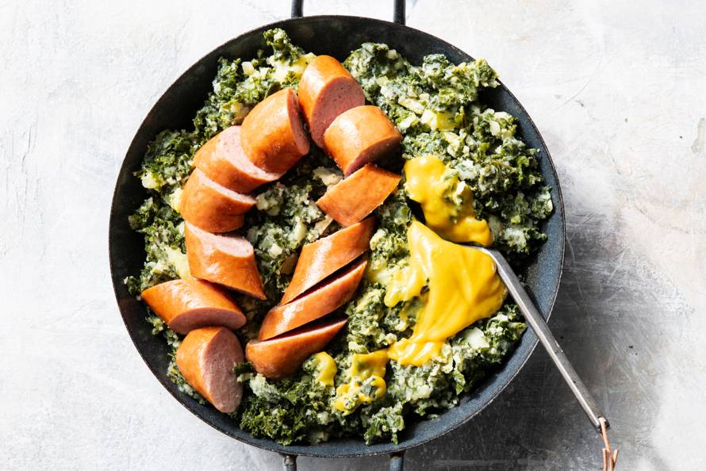

Boerenkool met worst
Ingredienten
300 gr gesneden boerenkool
500 gr kruimige aardappels (geschild)
1 grote of 2 kleine rookworsten
Scheut warme melk
20 gr boter
1 theelepel mosterd
peper en zout
Snufje nootmuskaat
Bereidings Wijze
Breng een grote pan water met een snufje zout aan de kook en voeg de aardappels hier aan toe in gelijke groottes. Voeg de gesneden boerenkool toe en laat bovenop de aardappels drijven. Doe de deksel op de pan en kook de aardappels en boerenkool in ca. 20 minuten gaar.
Giet af en stamp daarna fijn. Voeg de boter, mosterd en melk toe en meng tot een smeuïge puree. Breng de boerenkoolstamppot op smaak met een beetje peper, zout en nootmuskaat. Verwarm de rookworst en serveer bij de boerenkool. Ook lekker met wat appelmoes.